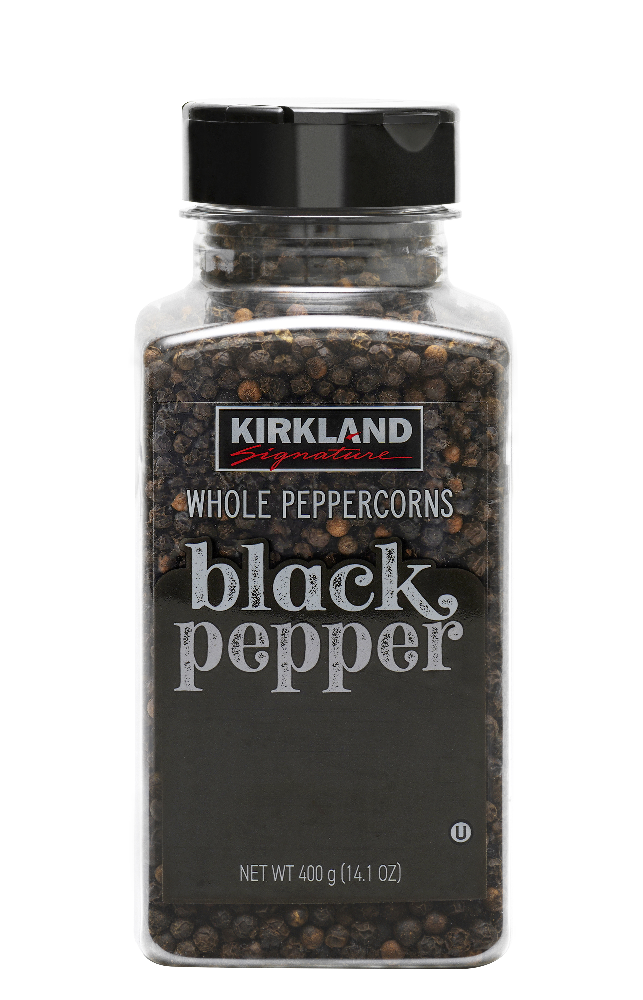
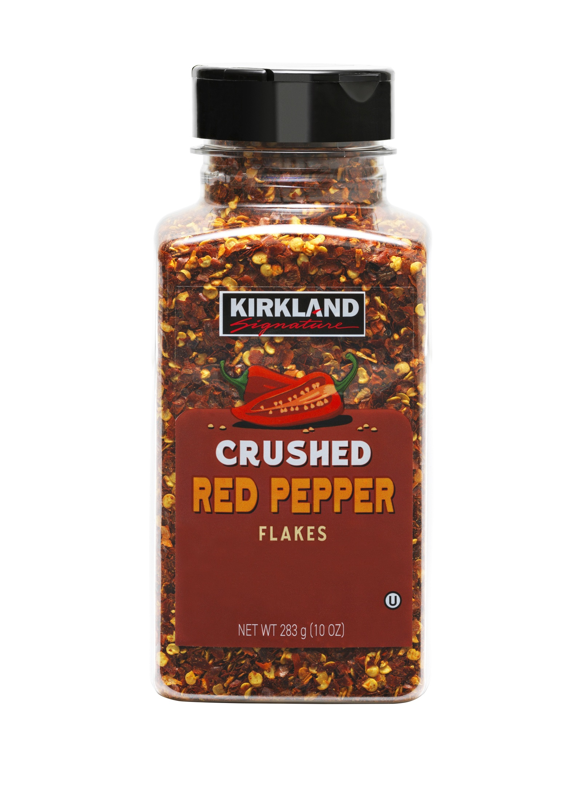
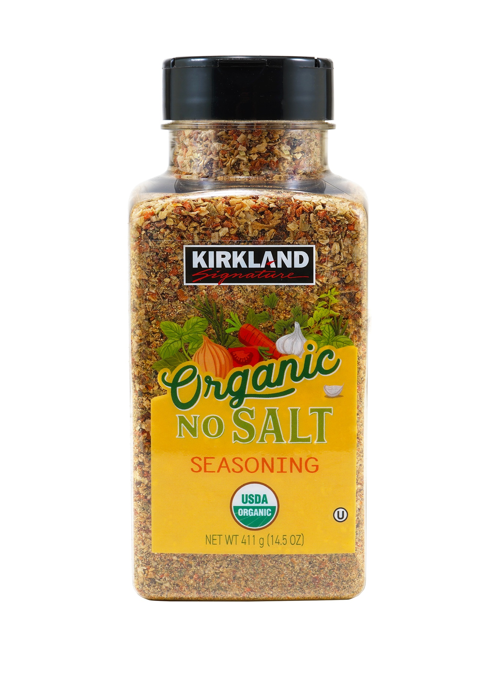
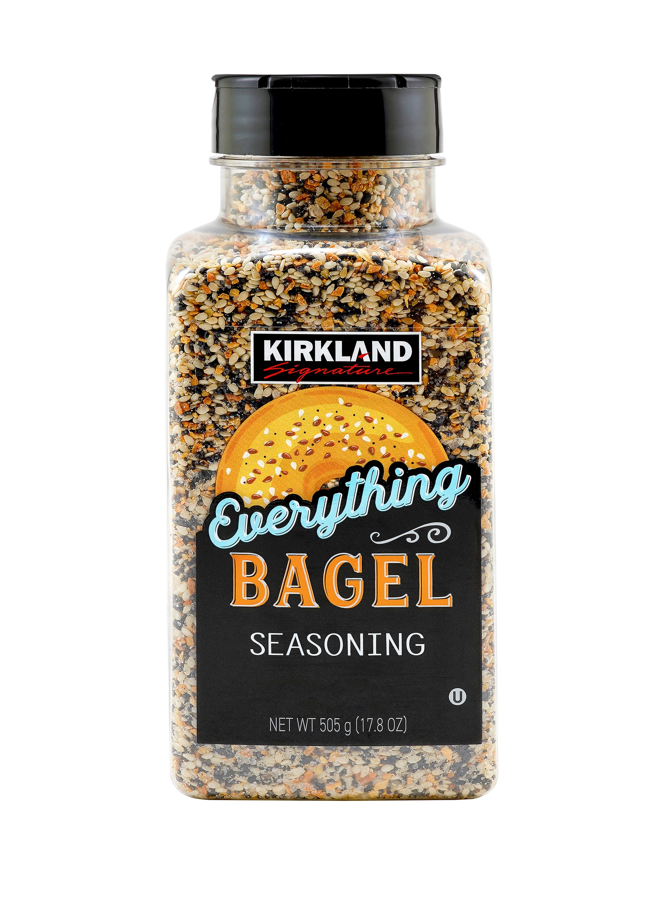
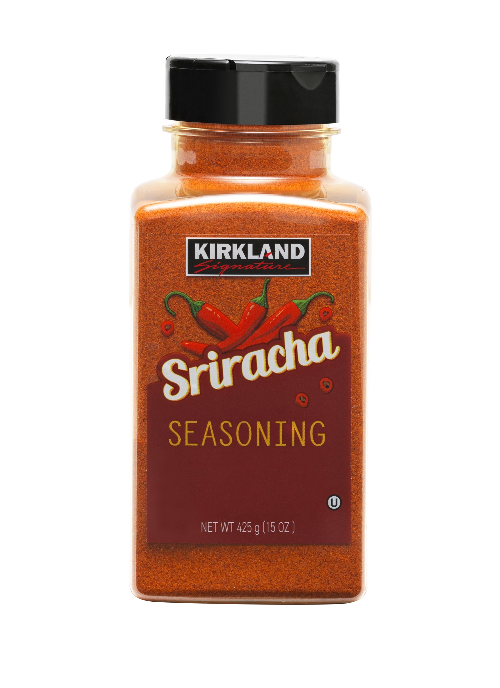
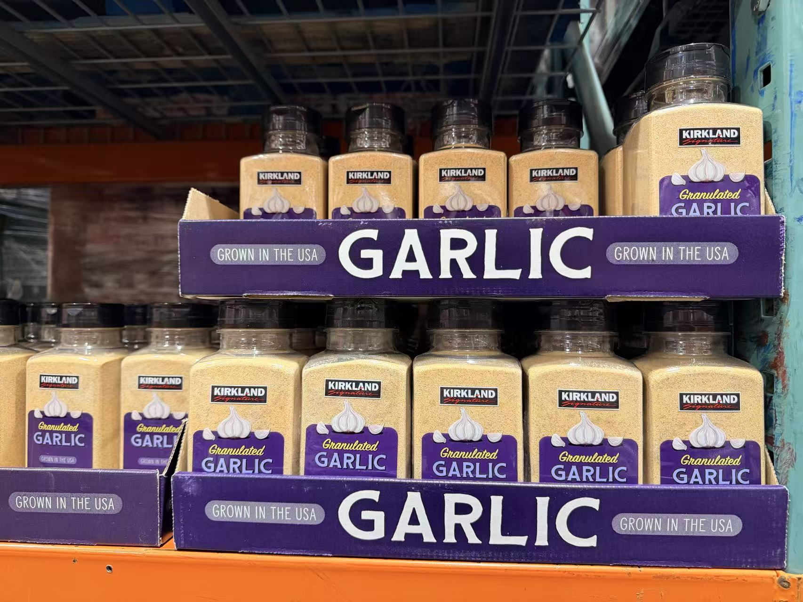
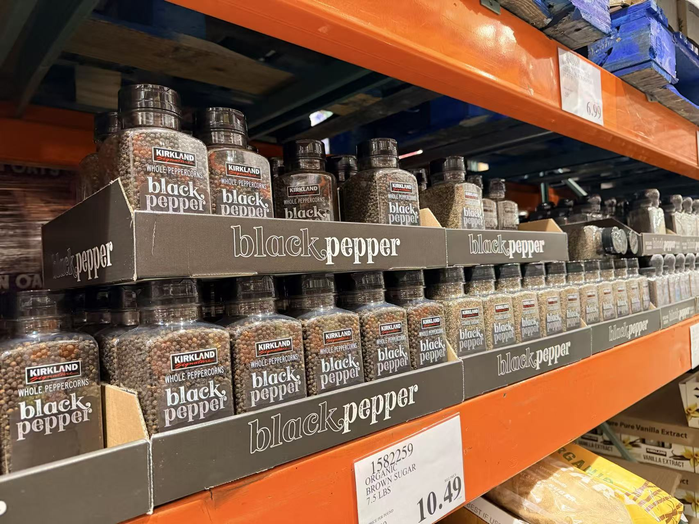
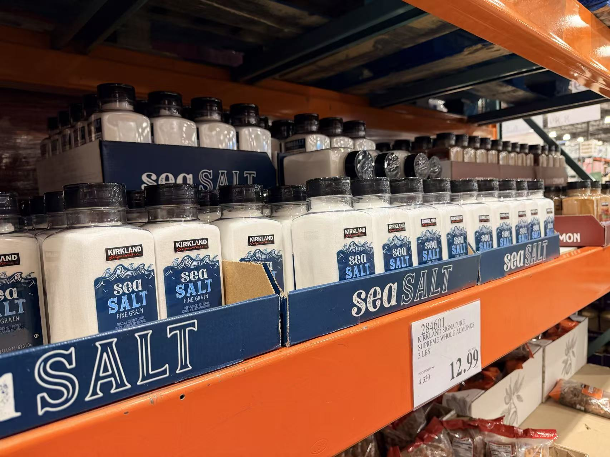
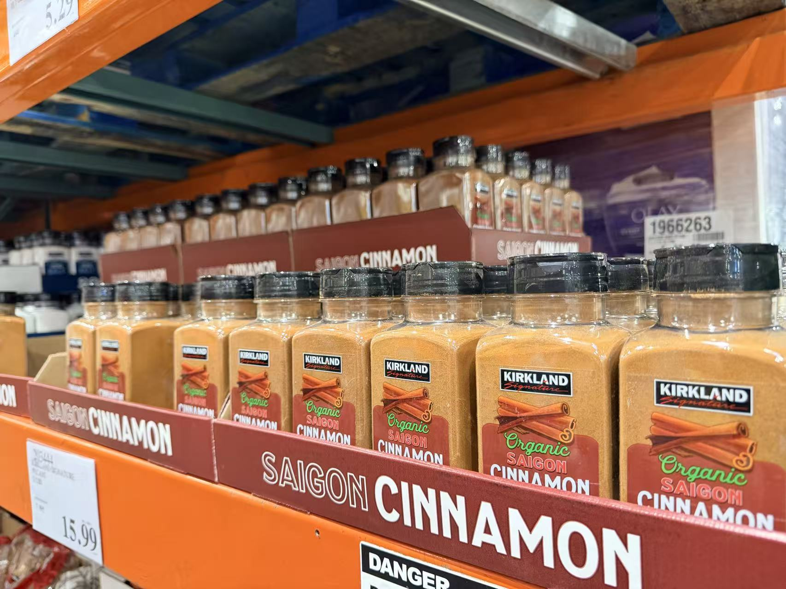

Corporate Label Systems · Costco Retail Photography
From label design to shelf-ready imagery.
A retail production workflow across Kirkland Signature seasoning products: label support, production consistency, Costco warehouse shelf presence and clean white-background photography for e-commerce use.


Case Note
Corporate design only works when it survives production.
This body of work is less about making one beautiful image and more about building a reliable retail system. The labels need to stay legible across flavors, materials and package sizes. The photography needs to keep color, texture and scale consistent enough for a shopper to trust the product before reading every detail.
The value here is the full chain: design support, production-ready packaging updates, products visible in a real Costco environment, and white-background photography that can move directly into retail or e-commerce use.
Maintain brand hierarchy, flavor clarity and front-panel readability across SKU variations.
Prepare and update label artwork with the discipline required for real packaging output.
Document the product system in a Costco warehouse environment, not just in a mockup.
Capture clean, color-aware packshots built for retail pages and sales presentation use.
White-background product photography
Clean product images with packaging discipline behind them.
The packshots are intentionally quiet: no decorative noise, no lifestyle distraction. The point is consistency, accurate color, readable labels and a polished retail finish.







Costco warehouse shelf presence
The work has to hold up under warehouse lighting, bulk displays and real shopper distance.
These shelf images prove the system in the environment where it actually matters. Color blocks, naming, label contrast and tray presentation all have to stay readable in a visually loud retail setting.




Range consistency
Same shelf language. Different products. One standard.
The Result
A practical retail system that connects design, production, shelf presence and photography.
This is the kind of work that rarely needs to shout. It needs to be correct, consistent and useful across every place the product appears: label file, warehouse shelf, sales deck and e-commerce listing.